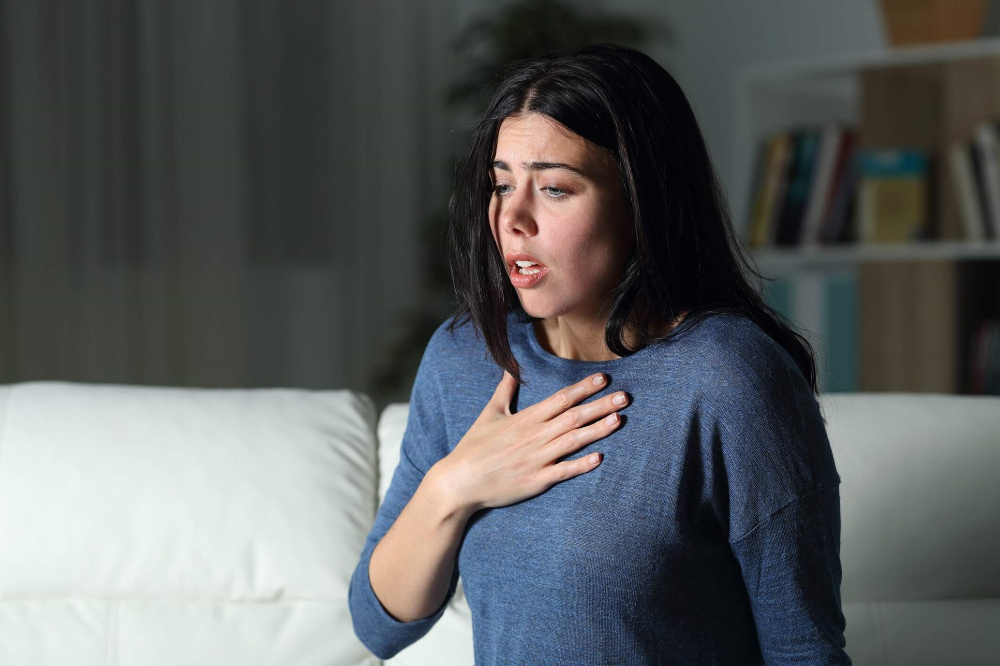
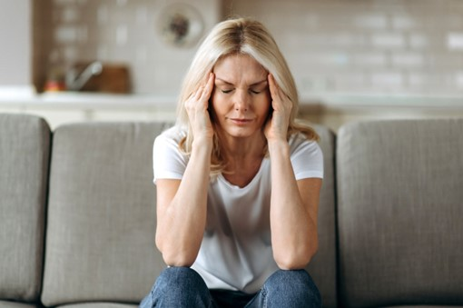
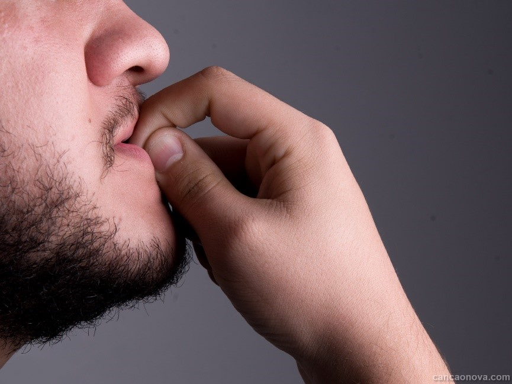
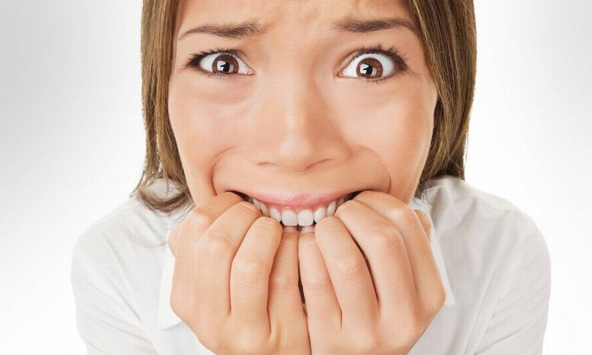
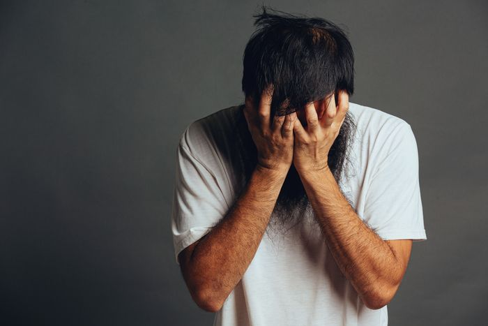

O que é Ansiedade?
A ansiedade é um sentimento natural e está relacionada, por exemplo, com um prazo apertado ou uma tarefa urgente no trabalho. Já os transtornos de ansiedade acometem pessoas que, geralmente, se preocupam intensamente e não conseguem lidar com essa autocobrança, a ponto de comprometer sua qualidade de vida e seu bem-estar.
Os transtornos ansiosos são uma reação emocional de uma ameaça do futuro. Incerteza e imprevisibilidade são seus principais gatilhos. O primeiro sinal é o sentimento de ansiedade em relação ao que irá ou poderá acontecer, acompanhado de pessimismo. Isso provoca no corpo e no cérebro humano uma sensação de perigo, urgência, medo e insegurança. Consequentemente, o organismo reage com uma “luta” ou “fuga”.
Por exemplo, uma pessoa que está sofrendo com cobranças intensas em seu ambiente de trabalho pode inicialmente apresentar irritabilidade, raiva e tensão muscular. Posteriormente, ela pode desenvolver insegurança, labilidade emocional (mudanças exageradas no humor, sentimentos e/ou emoções), tremores e transpiração excessiva.
Quais são os tipos de transtornos de ansiedade?
Os tipos mais comuns e suas características são:
• transtorno de ansiedade generalizada: preocupação excessiva e análise minuciosa de cada ponto ou situação;
• transtorno obsessivo-compulsivo (TOC): pensamentos obsessivos e medos irracionais que levam a atitudes compulsivas;
• fobia social (ou transtorno de ansiedade social): preocupação e medo com situações sociais comuns;
• síndrome do pânico: crises intensas de medo e mal-estar generalizado;
• agorafobia: medo de situações e lugares que possam causar impotência, constrangimento ou aprisionamento.
Quais as principais causas e sintomas da ansiedade?
As causas podem variar de pessoa para pessoa e podem surgir, por exemplo:
• por desequilíbrios químicos cerebrais;
• pela falta de suporte familiar;
• por traumas (principalmente na infância);
• ou por uma combinação de fatores.
Os principais sintomas são:
• físicos: tensão muscular, taquicardia ou palpitação, dor no peito, transpiração em excesso, dor de cabeça, tontura;
• psíquicos: sensação de desrealização, quando o ambiente parece todo diferente, ou sensação de despersonalização, quando a pessoa parece não se reconhecer mais.
Quais as consequências dos transtornos de ansiedade?
A preocupação excessiva, os pensamentos acelerados e repetitivos, o medo desmedido, as atitudes compulsivas e demais características dos transtornos de ansiedade podem trazer consequências a curto, médio e longo prazo para uma pessoa. Os impactos negativos comprometem a qualidade de vida. E, também, os relacionamentos pessoais e profissionais, a capacidade produtiva e a relação da pessoa consigo e com o mundo.
À medida que o quadro se agrava (principalmente sem tratamento), piora a maneira como a pessoa encara o ambiente, o outro e a si mesma. Isso resulta em:
• isolamento e solidão;
• baixa autoestima;
• dificuldade de cuidar de si mesma;
• sedentarismo;
• emagrecimento ou obesidade;
• compulsões;
• vícios;
• entre outros maus hábitos e consequências.
Ainda, os transtornos ansiosos podem acarretar outras doenças mais graves e incapacitantes, como depressão, diabetes, hipertensão e problemas cardíacos.
Em geral, a psiquiatria trabalha mais com o conceito de controle do que de cura. A ansiedade se apresenta de forma crônica na grande maioria das pessoas. Uma vez diagnosticada com algum transtorno de ansiedade, a pessoa sempre poderá voltar a apresentar seus sintomas, mesmo que tenham sido controlados.
Por isso, o tratamento não deve envolver apenas medicamentos. É necessária uma mudança de qualidade de vida que deve ser mantida de forma contínua. Geralmente, os sintomas de ansiedade costumam piorar nos momentos em que a pessoa se encontra sob grande estresse. É importante levar em conta diferentes fatores que podem influenciar esse estresse, como familiares, laborais, sociais etc.

Como tratar a ansiedade?
Antes de tudo, é preciso dar atenção à saúde geral: com boa alimentação, exercícios físicos, hábitos de higiene, consultas e exames regulares, boas noites de sono, vida social ativa e práticas de autocuidado e bem-estar. Esses são básicos para cuidado com o corpo e a mente, e colaboram para prevenir ou amenizar os transtornos de ansiedade.
De maneira geral, o tratamento dos transtornos ansiosos leves (baixo impacto na vida da pessoa) engloba:
• terapias cognitivo-comportamentais, como: técnicas de resolução de conflitos, mindfulness, meditação, psicologia positiva e terapia psicodinâmica;
• psicoterapia e psicanálise;
• prática de atividades físicas, pois liberam substâncias positivas (como a serotonina [CBD1]) que ajudam na regulação do organismo e causam prazer e relaxamento;
• alimentação balanceada, pois ajuda a suportar o estresse e a se recuperar mais facilmente de algumas doenças;
• tratamento com remédios: ansiolíticos e antidepressivos;
• tratamentos naturais como prática de natação, caminhada, yôga, dança, Pilates, tai chi, aikido ou atividades que causam bem-estar e lazer como ler, pintar, tocar algum instrumento, desenhar, ouvir música.
Quando a situação é um pouco mais grave e a pessoa já desenvolveu pânico, por exemplo, utilizam-se medicamentos antidepressivos. Geralmente, eles têm impacto positivo no tratamento da ansiedade. Ainda, são mantidos os atendimentos com psicoterapia e psicanálise.
Independentemente de possuir ou não ansiedade, ou do nível da doença, a psicoterapia é indicada, pois serve para as pessoas se conhecerem mais e aprenderem a lidar melhor com suas emoções.
Como controlar a ansiedade?
É preciso enfatizar: a prevenção da depressão e da ansiedade está ligada à qualidade de vida. O equilíbrio é biopsicossocial (biológico, psíquico e social). Para que ele exista é preciso que a pessoa não sobrecarregue apenas uma área de sua vida e deixe as outras de lado — por exemplo, focar excessivamente na profissional e negligenciar sua vida afetiva, familiar e social.
Todas as técnicas de tratamento — e algumas também servem para prevenção — buscam fazer a pessoa refletir sobre essas situações e encontrar um equilíbrio ou controle de todas as áreas.
De maneira geral, existem práticas que podem ajudar na prevenção e nesse equilíbrio. Algumas sugestões são:
• Aprenda a meditar e se conectar consigo e com seu espiritual;
• Busque atividades físicas com as quais se identifique e crie uma rotina com elas;
• Treine sua respiração, inspire e expire profundamente;
• Programe e realize hobbies, distrações, passeios e viagens;
• Socialize dando preferência para os encontros pessoalmente;
• Organize e revise sua rotina, priorizando o autocuidado;
• Cuide e tenha experiências com animais e natureza;
• Priorize boas noites de sono e descanso;
• Pratique hábitos de autoconhecimento, como leitura e escrita.
Procure ajuda de especialistas
Nesse contexto, a comunicação é muito importante. Por isso, é recomendável que a pessoa com diagnóstico ou tendência a problemas psíquicos procure ajuda. Esse conselho serve também para sua rede de apoio (familiares, parceiros, colegas e amigos).
Psicólogos e psiquiatras são os profissionais indicados para realizar o diagnóstico correto e administrar o tratamento mais adequado.

Características importantes
O transtorno da ansiedade generalizada (TAG), segundo o manual de classificação de doenças mentais (DSM.IV), é um distúrbio caracterizado pela “preocupação excessiva ou expectativa apreensiva”, persistente e de difícil controle, que perdura por seis meses no mínimo e vem acompanhado por três ou mais dos seguintes sintomas: inquietação, fadiga, irritabilidade, dificuldade de concentração, tensão muscular e perturbação do sono.
É importante registrar também que, nesses casos, o nível de ansiedade é desproporcional aos acontecimentos geradores do transtorno, causa muito sofrimento e interfere na qualidade de vida e no desempenho familiar, social e profissional dos pacientes.
O transtorno da ansiedade generalizada pode afetar pessoas de todas as idades, desde o nascimento até a velhice. Em geral, as mulheres são um pouco mais vulneráveis do que os homens.
Dicas de Cuidados
Crianças:
Comunicação Aberta: Estabeleça um ambiente familiar onde a criança se sinta confortável para expressar seus sentimentos e preocupações.
Rotina Consistente: Mantenha uma rotina diária previsível, com horários regulares para alimentação, sono e atividades.
Tempo para Brincar: Incentive brincadeiras que promovam a criatividade e a expressão emocional, como desenho, jogos imaginativos e atividades ao ar livre.
Limitação da Exposição a Estímulos Estressantes: Monitore e limite o tempo de tela e a exposição a conteúdos que possam aumentar a ansiedade, como notícias negativas ou programas violentos.
Adolescentes:
Estabelecimento de Limites Saudáveis: Ajude os adolescentes a estabelecer limites saudáveis em relação às atividades escolares, sociais e online.
Prática de Relaxamento: Ensine técnicas de relaxamento, como respiração profunda, meditação ou yoga, que podem ajudar a acalmar a mente e o corpo.
Exercício Regular: Incentive a prática regular de exercícios físicos, que podem ajudar a reduzir os sintomas de ansiedade e promover o bem-estar emocional.
Busca de Ajuda Profissional: Eduque sobre a importância de procurar ajuda de um profissional de saúde mental se a ansiedade estiver interferindo nas atividades diárias ou no bem-estar emocional.
Adultos:
Autocuidado: Promova o autocuidado através de atividades que proporcionem prazer e relaxamento, como hobbies, leitura, banhos relaxantes ou momentos de lazer.
Gerenciamento do Estresse: Ensine estratégias eficazes para lidar com o estresse, como organização, resolução de problemas, terapia cognitivo-comportamental ou prática regular de mindfulness.
Estabelecimento de Prioridades: Ajude os adultos a identificarem e priorizarem as tarefas mais importantes, evitando a sobrecarga de responsabilidades.
Conexões Sociais: Incentive a manutenção de conexões sociais positivas, através de interações com amigos, familiares ou grupos de apoio.
Idosos:
Manutenção de Rotina: Estabeleça uma rotina diária estruturada para promover um senso de estabilidade e segurança.
Atividades de Lazer: Incentive a participação em atividades que proporcionem prazer e estimulem a mente, como jogos de tabuleiro, jardinagem ou participação em grupos comunitários.
Estímulo Mental: Promova o aprendizado contínuo e a estimulação mental através de leitura, quebra-cabeças, cursos online ou outras atividades intelectualmente desafiadoras.
Apoio Emocional: Esteja disponível para oferecer apoio emocional e ouvir as preocupações do idoso, encorajando a busca de ajuda profissional se necessário.
Independentemente da idade, é fundamental que as pessoas com ansiedade recebam apoio emocional, compreensão e orientação adequada para aprender a lidar com os sintomas de ansiedade de forma saudável e eficaz.

Exercícios/Brincadeiras
Crianças:
Brincadeiras ao Ar Livre: Atividades ao ar livre, como correr, pular corda, jogar bola, ou até mesmo uma caça ao tesouro no quintal, podem ser excelentes para liberar energia acumulada e reduzir a ansiedade.
Yoga para Crianças: Ensinar poses de yoga adaptadas para crianças pode ajudá-las a se concentrar na respiração e nos movimentos corporais, promovendo relaxamento e consciência do corpo.
Jogos Criativos: Jogos que envolvem a imaginação, como contar histórias, dramatização ou construção com blocos, podem ajudar as crianças a se distrair e a se conectar com o momento presente.
Adolescentes:
Exercícios Aeróbicos: Atividades como corrida, dança, ciclismo ou aeróbica podem ajudar os adolescentes a liberarem a tensão e o estresse acumulados.
Prática de Mindfulness: Ensinar técnicas simples de mindfulness, como foco na respiração ou atenção plena durante uma caminhada, pode ajudar os adolescentes a se acalmar e a reduzir a ansiedade.
Artes Marciais: A prática de artes marciais, como karatê, judô ou taekwondo, pode ajudar os adolescentes a desenvolverem habilidades de autodisciplina, confiança e controle emocional.
Adultos:
Caminhadas na Natureza: Caminhar em trilhas naturais ou parques pode ser uma maneira eficaz de reduzir a ansiedade e promover um senso de calma e conexão com a natureza.
Yoga ou Pilates: Aulas de yoga ou pilates enfatizam a respiração, o alongamento e o fortalecimento muscular, proporcionando uma forma suave de exercício e relaxamento.
Treinamento Intervalado de Alta Intensidade (HIIT): Exercícios de HIIT, que alternam entre períodos de alta intensidade e recuperação, podem ajudar a liberar endorfinas e melhorar o humor.
Dança: Participar de aulas de dança ou simplesmente dançar em casa ao som da música favorita pode ser uma forma divertida e eficaz de aliviar o estresse e a ansiedade.
Idosos:
Natação ou Hidroginástica: A água proporciona um ambiente de baixo impacto e relaxante para exercitar o corpo, além de promover uma sensação de leveza e bem-estar.
Tai Chi: Esta prática suave e fluida combina movimentos corporais suaves, respiração profunda e meditação, sendo especialmente benéfica para promover o relaxamento e a redução do estresse.
Alongamento e Flexibilidade: Exercícios de alongamento suaves, como yoga para idosos ou a prática de tai chi, podem ajudar a relaxar os músculos e a aliviar a tensão acumulada.
Independentemente da idade, é importante encontrar atividades que sejam agradáveis, seguras e adequadas ao nível de condicionamento físico de cada pessoa. Incentive sempre a prática regular de exercícios físicos como parte de um estilo de vida saudável e equilibrado para ajudar a gerenciar a ansiedade.
Planejamento de Rotina
Segunda à Sexta
Manhã:
7:00 - Despertar: Levante-se gradualmente e inicie o dia com uma respiração profunda.
7:30 - Café da Manhã: Desfrute de uma refeição equilibrada e nutritiva para sustentar a energia ao longo do dia.
8:30 - Exercício: Dedique 30 minutos a uma hora para atividade física, como caminhada, corrida, ou yoga, para liberar endorfinas e reduzir a ansiedade.
9:30 - Tempo de Relaxamento: Reserve alguns minutos para meditação ou mindfulness para começar o dia com calma.
Tarde:
12:30 - Almoço: Faça uma pausa para uma refeição saudável e balanceada.
13:30 - Pausa Rápida: Tire alguns minutos para uma breve caminhada ou alongamento para recarregar as energias.
15:00 - Foco na Respiração: Pratique técnicas de respiração profunda para aliviar a tensão e manter o foco.
16:30 - Atividade Criativa: Envolver-se em uma atividade criativa, como pintura, escrita ou jardinagem, para liberar a mente do estresse.
Noite:
18:30 - Jantar: Desfrute de uma refeição leve e nutritiva.
19:30 - Tempo de Lazer: Dedique tempo para atividades relaxantes, como ler um livro, assistir a um filme ou praticar um hobby.
21:00 - Rotina de Relaxamento: Implemente uma rotina relaxante antes de dormir, como um banho quente ou meditação guiada.
22:00 - Hora de Dormir: Estabeleça uma hora regular para ir para a cama e priorize o sono de qualidade.
Sábado e Domingo
Manhã:
8:00 - Despertar com Calma: Permita-se dormir um pouco mais e acorde sem pressa.
8:30 - Café da Manhã Relaxado: Desfrute de um café da manhã tranquilo e nutritivo.
9:30 - Atividade ao Ar Livre: Aproveite o ar livre com uma caminhada em um parque ou trilha, ou pratique ioga ao ar livre para conectar-se com a natureza e reduzir o estresse.
Tarde:
12:30 - Almoço: Prepare e desfrute de uma refeição leve e saudável.
13:30 - Tempo de Lazer: Dedique tempo para um hobby ou atividade de lazer que traga alegria e relaxamento.
15:30 - Tempo Livre: Reserve um tempo para si mesmo para fazer algo que você ama, seja ler, cozinhar, ou ouvir música.
Noite:
18:30 - Jantar: Cozinhe uma refeição caseira e desfrute de uma noite tranquila em casa.
19:30 - Tempo de Relaxamento: Dedique tempo para relaxar com uma atividade calmante, como meditação, banho de espuma ou alongamento suave.
21:00 - Socialização: Se desejar, passe um tempo com amigos ou familiares em um ambiente descontraído.
22:30 - Hora de Dormir: Prepare-se para dormir com uma rotina tranquila, como um chá relaxante ou leitura leve.
Estes planejamentos de rotina fornecem estrutura e previsibilidade, ajudando a reduzir a ansiedade e promovendo o bem-estar físico e emocional ao longo da semana e durante o final de semana. Lembrando que NÃO foi considerado o período escolar, período de trabalho, período de quaisquer cursos feitos ao longo do dia ou período de faculdade.

Considerações Finais:
Priorize o autocuidado e respeite os próprios limites.
Esteja aberto a ajustar a rotina conforme necessário para atender às suas necessidades individuais.
Busque apoio profissional de um psicólogo ou psiquiatra, se necessário, para orientação e tratamento específicos da ansiedade.
